Catálogo 2026
Puertas
de interior
Placas listas para colocar
Distribuidor
oficial
oficial
Además de fabricar ventanas de aluminio, en Aluwal somos distribuidores oficiales de Gromanti, una de las fábricas de puertas placa más grandes del país, con planta en Exaltación de la Cruz.
Trabajamos sus seis líneas: desde la Clásica para pintar o lustrar hasta la Elite, que viene foliada de fábrica y se coloca en seco. También la F30, homologada contra el fuego.
Te asesoramos con el modelo y la medida, y te la llevamos a la obra.
Mismo producto y misma garantía de fábrica, con la atención de Aluwal.
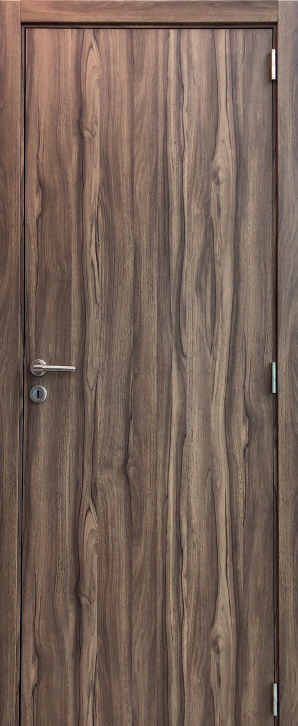
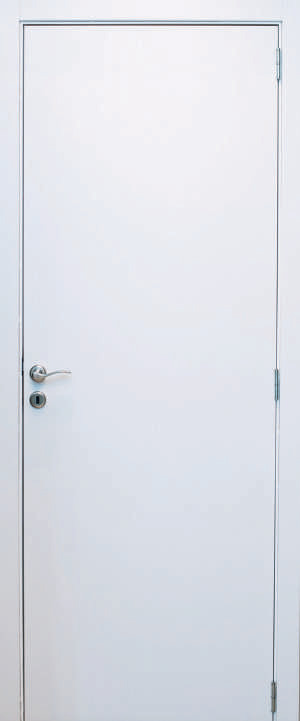
Foliada en PVC, sin mantenimiento. Lista para instalar en seco.
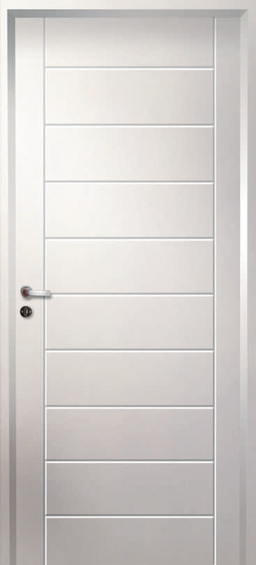
Resistente al fuego, ensayada por el INTI.
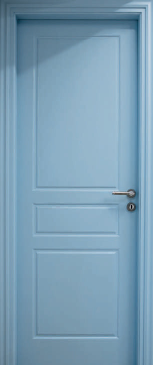
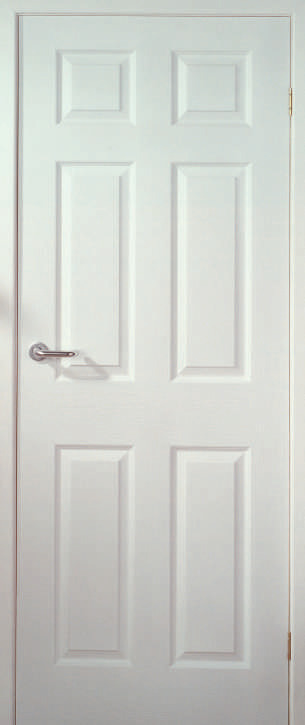
Molduras profundas en ambas caras, para pintar del color que quieras.
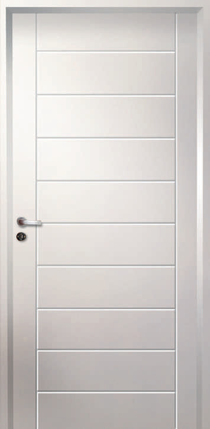
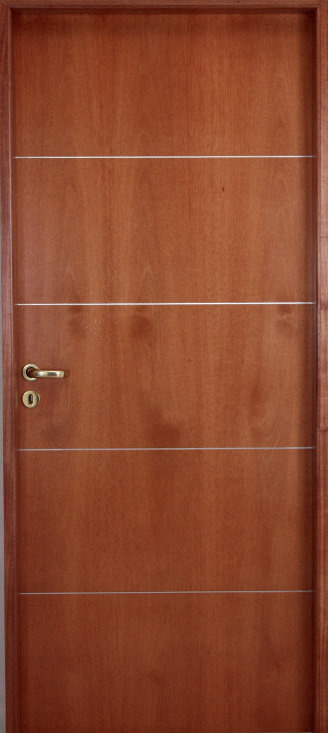
Lisa con buñas horizontales o verticales. Para pintar o lustrar.
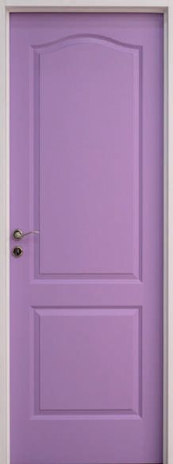
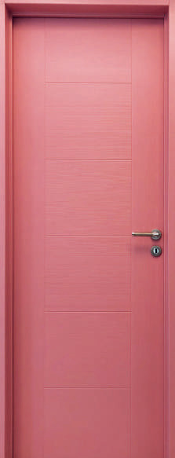
Paneles moldeados en HDF con superficie texturada.
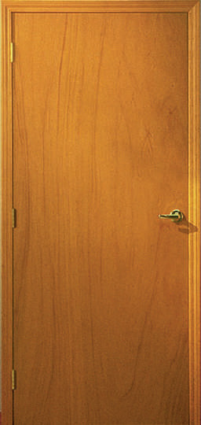
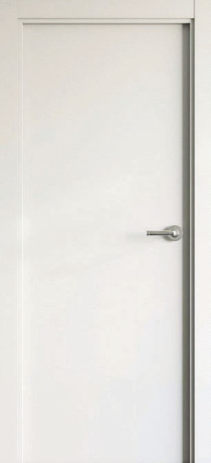
La puerta placa de siempre. Enchapada o para pintar.
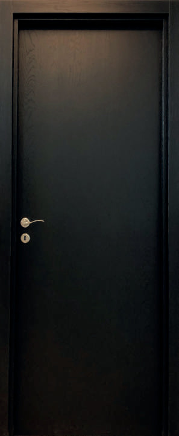
Ébano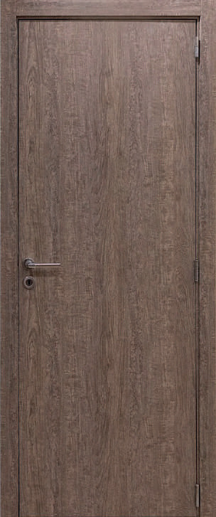
Visón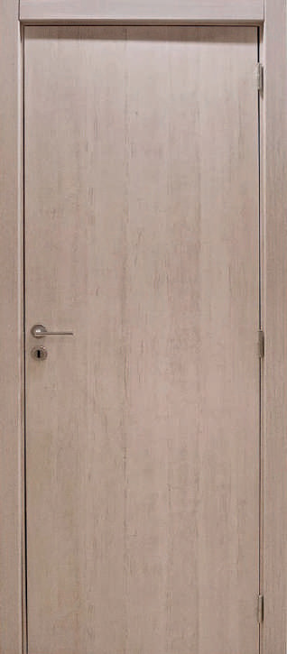
Fresno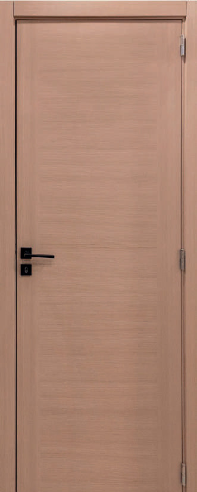
HayaHoja, marco y contramarco vienen foliados en PVC de fábrica: no se pintan ni se lustran. Se colocan en seco, sin revoque ni amure, y el contramarco regulable absorbe las diferencias de espesor de la pared.
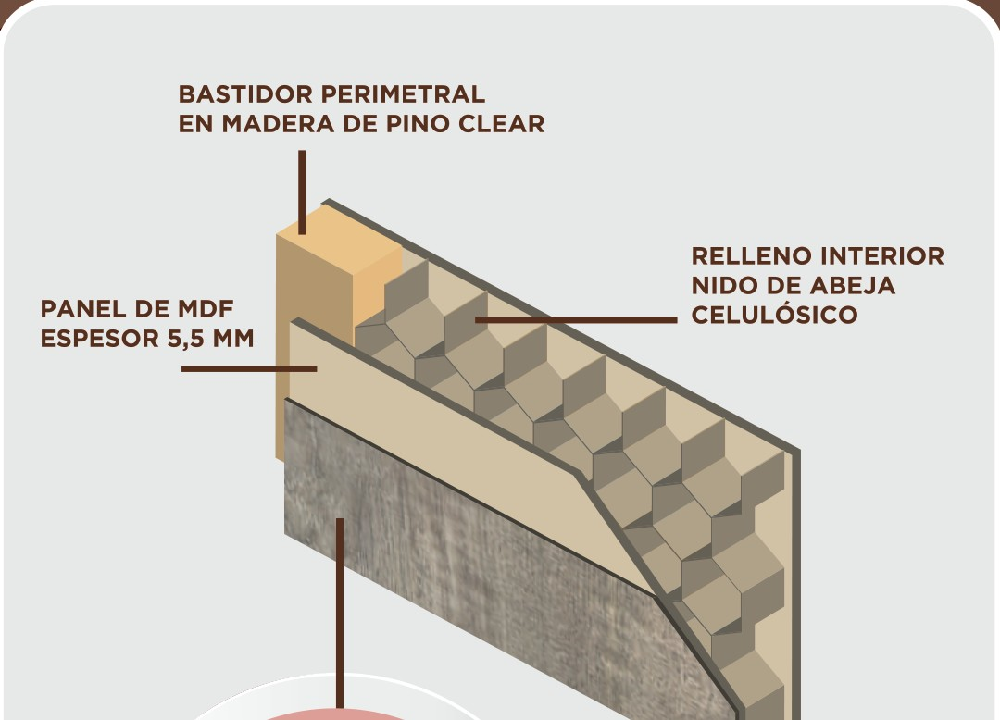
Opcional con insertos de aluminio.
Gris carbono con franja en madera e insertos de aluminio.
Por dentro lleva un tablero tubular de 38 mm con relleno ignífugo. Además de frenar el fuego, aísla mejor el ruido y la temperatura que una placa común.
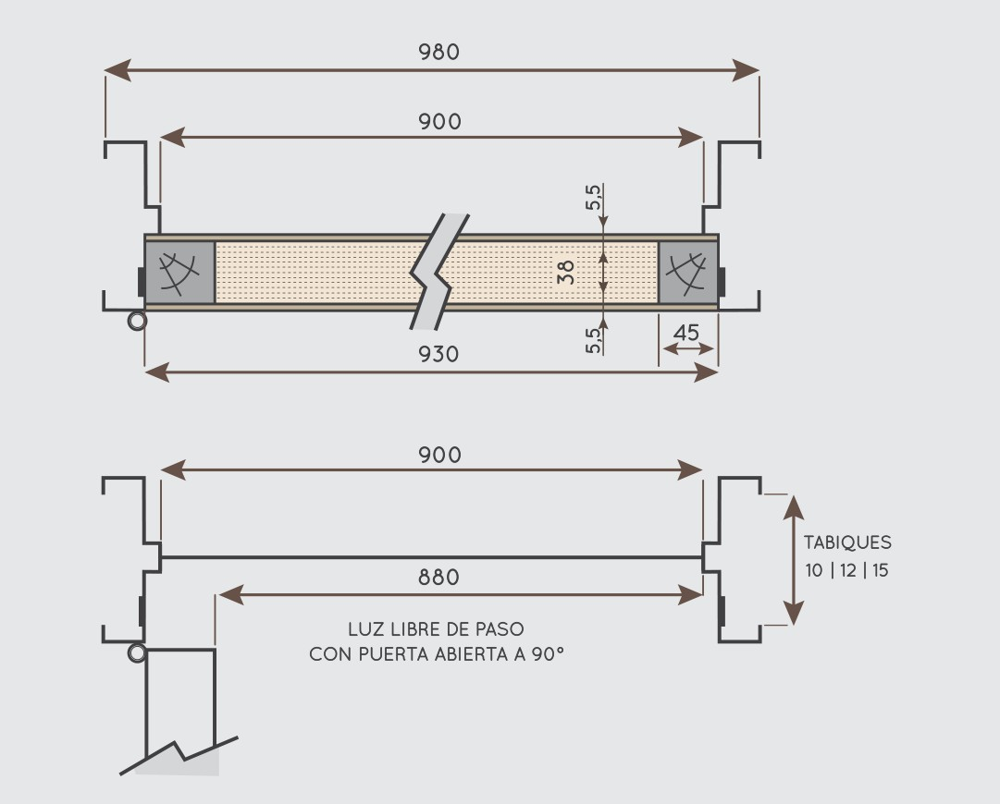
Puertas con molduras profundas en las dos caras, de estilo clásico. Vienen con tres manos de base blanca, listas para pintar del color que elijas.
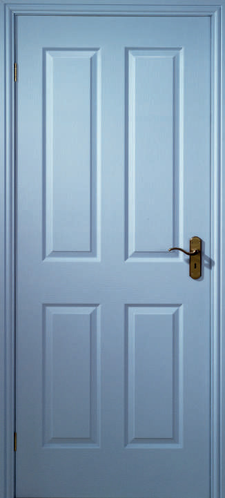
Florencia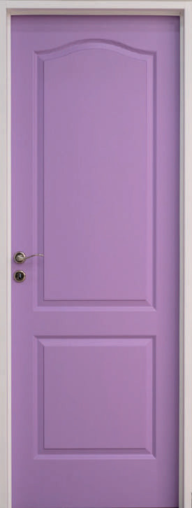
Camden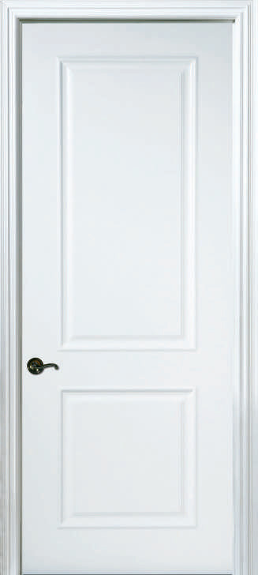
VerónicaPlaca lisa con buñas horizontales o verticales. En MDF para pintar o enchapada para lustrar. Nuevo modelo CAE con buñas verticales.
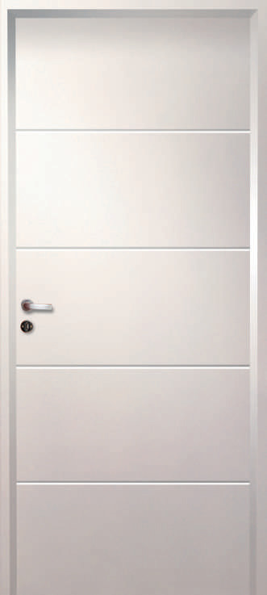
Americanacon buñas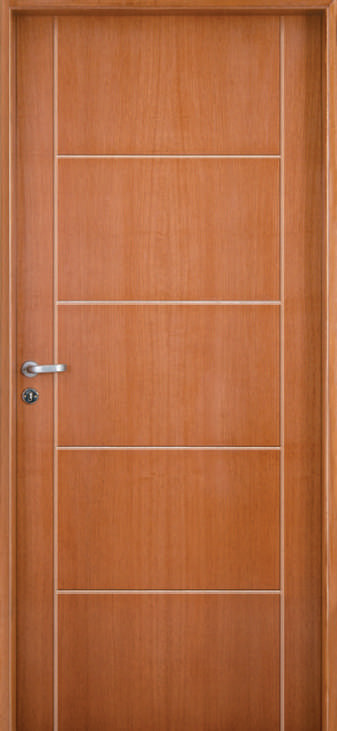
Mónicacon buñas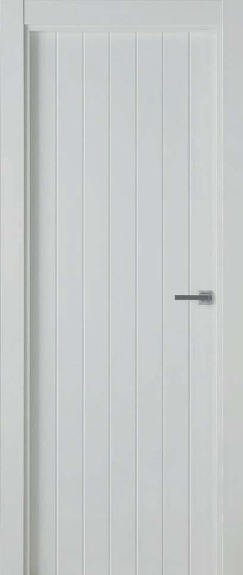
CAE · nuevobuñas verticalesPlacas con paneles moldeados en HDF y superficie texturada tipo madera. Vienen prepintadas, listas para laca o pintura del color que quieras.
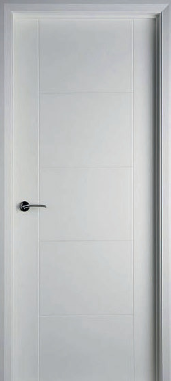
Mariel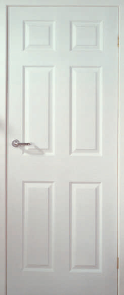
ColonialLa puerta placa tradicional: buena calidad a un precio accesible. En MDF para pintar o enchapada en madera para lustrar.
Todas las medidas en milímetros. Si tu vano no coincide con ninguna, consultanos: te ayudamos a elegir la que corresponde.
| Ancho int. | 600 | 700 | 830 | 900 |
|---|---|---|---|---|
| Ancho ext. | 660 | 760 | 890 | 960 |
| Alto c/marco | 2043 | |||
| Ancho int. | 620 | 720 | 870 | 920 |
|---|---|---|---|---|
| Ancho ext. | 680 | 780 | 930 | 980 |
| Alto c/marco | 2043 | |||
| Ancho int. | 600 | 700 | 830 | 900 |
|---|---|---|---|---|
| Ancho ext. | 645 | 745 | 875 | 945 |
| Alto c/marco | 2030 | |||
| Ancho int. | 620 | 720 | 820 | 920 |
|---|---|---|---|---|
| Ancho ext. | 670 | 770 | 870 | 970 |
| Alto c/marco | 2030 | |||
| Ancho int. | 600 | 700 | 800 | 900 |
|---|---|---|---|---|
| Ancho ext. | 1260 | 1460 | 1660 | 1860 |
| Alto c/marco | 2040 | |||
| Ancho int. | 620 | 720 | 870 | 920 |
|---|---|---|---|---|
| Ancho ext. | 680 | 780 | 930 | 980 |
| Alto c/marco | 2043 | |||
| Ancho int. | 620 | 720 | 860 | 920 |
|---|---|---|---|---|
| Ancho ext. | 670 | 770 | 920 | 970 |
| Alto c/marco | 2030 | |||